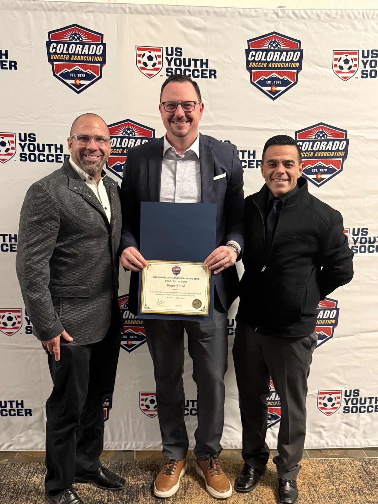

Playing & coaching for more than 20 years.
At a young age, my parents switched me to a different soccer team simply because they practiced across the street from our house. Looking back, that small decision had a huge impact on my life. The team had an incredible coach who made the game fun, competitive, and challenging. I quickly fell in love with it.
Shortly after graduating from college, I began coaching competitively and discovered how much I enjoyed teaching and developing young players. I earned my US Soccer National C License and coached for nine years before taking a short break after starting a family. Once my oldest turned three, I stepped back in by leading her team, and I’ve continued ever since.
What I love most about soccer is that it is perfectly imperfect. No matter how long you play or coach, you can never fully master the game.
One of my favorite memories as a player came at 14 years old, competing in the Holland Cup in Amsterdam. Our team won the tournament after surviving three consecutive penalty shootouts, including the championship match against a team from Italy.